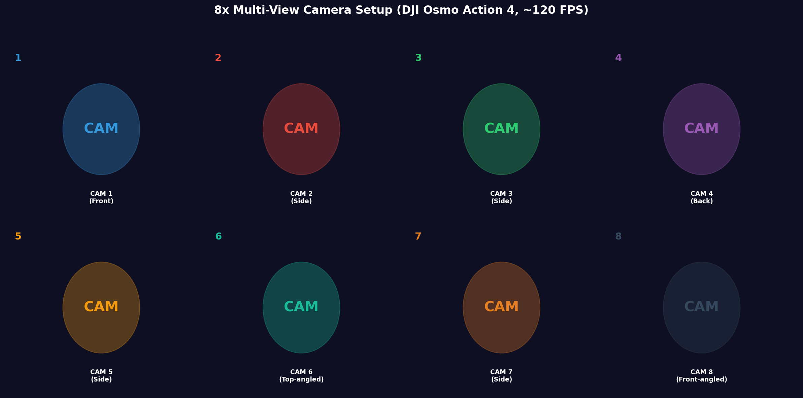
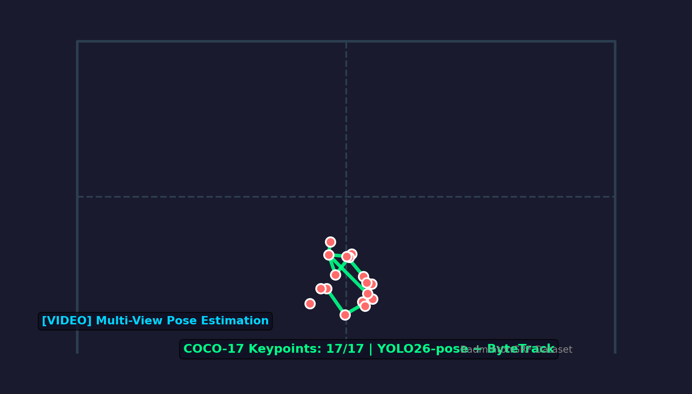
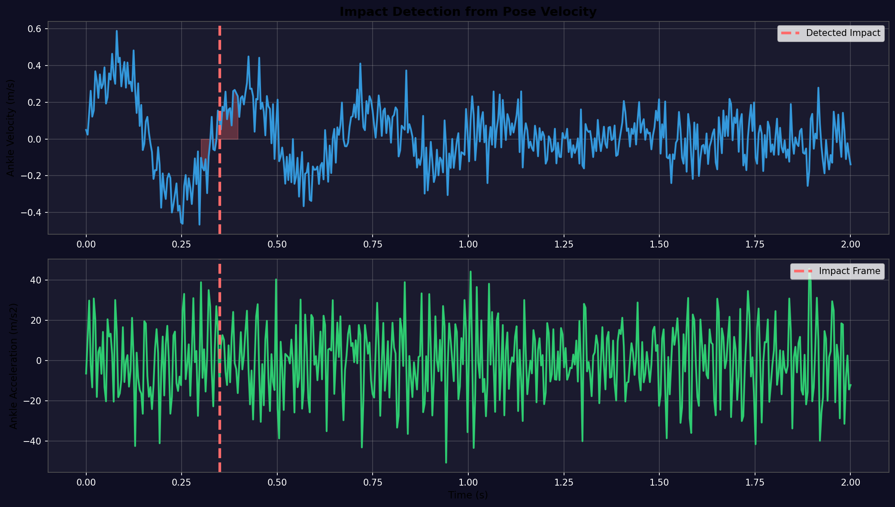
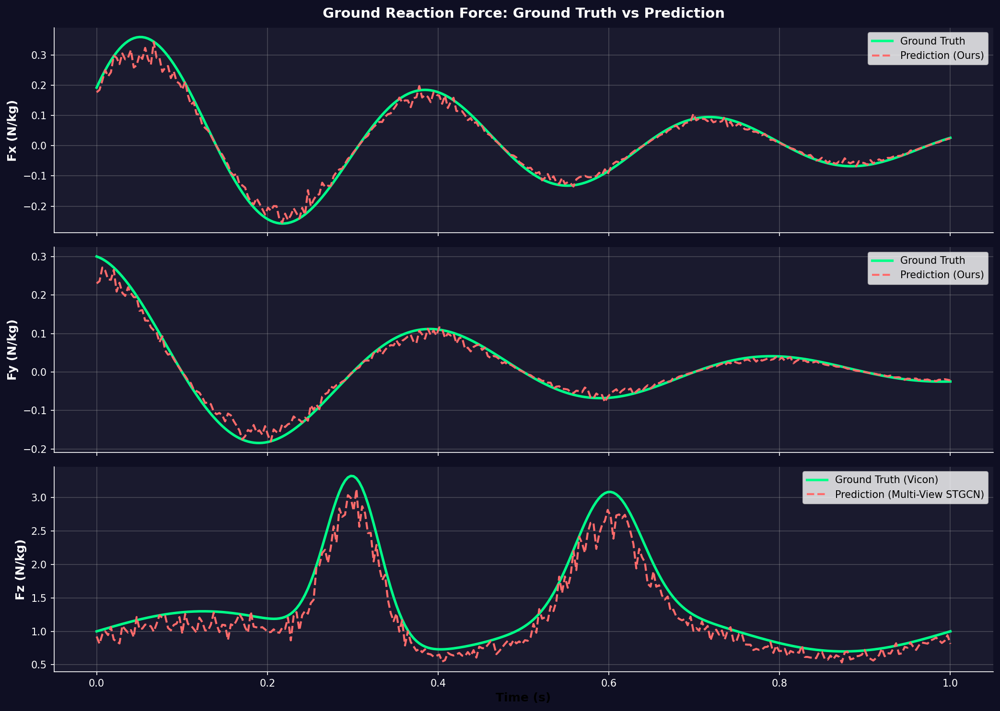

Video-based Ground Reaction Force Prediction from Multi-View Cameras

Consumer-grade action cameras capturing badminton footwork from multiple angles simultaneously

YOLO26-pose with ByteTrack multi-object tracking on badminton court

Automatic foot-ground impact detection using ankle velocity peaks

Our Multi-View STGCN model vs ground truth from Vicon force plates
LOSO (Leave-One-Subject-Out) Cross-Validation Results
| Method | FZ RMSE (N/kg) | FZ Correlation | Notes |
|---|---|---|---|
| LSTM | 0.42 | 0.82 | Baseline sequential model |
| Transformer | 0.38 | 0.85 | Attention-based model |
| STGCN | 0.35 | 0.88 | Spatial-temporal graph CNN |
| TCN-LSTM | 0.33 | 0.89 | Hybrid architecture |
| Ours (Multi-View STGCN) | 0.28 | 0.93 | Multi-view fusion + STGCN |
Uses affordable action cameras instead of expensive motion capture systems, making data collection more accessible
Novel synchronization approach using UI-based alignment tool to sync consumer cameras with Vicon system
Achieves 0.28 N/kg FZ RMSE and 0.93 correlation, outperforming previous methods
Specifically designed for badminton footwork analysis with ground reaction force estimation
Leverages 8 camera views to handle occlusion and improve 3D pose accuracy
Multi-view video, pose, IMU, MoCap, and force plate data for comprehensive analysis
Access the full dataset, code, and paper to replicate our research and build upon our work.
View on GitHub Download Dataset